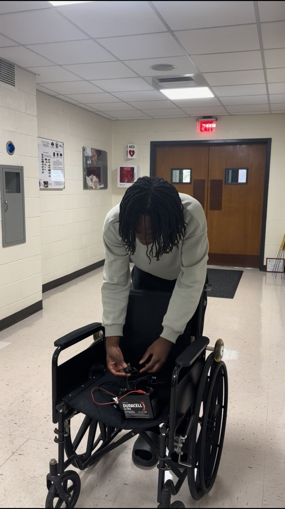
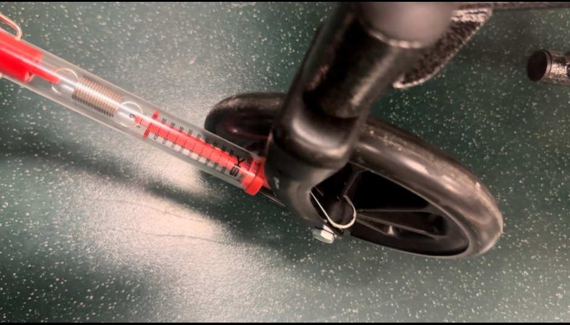
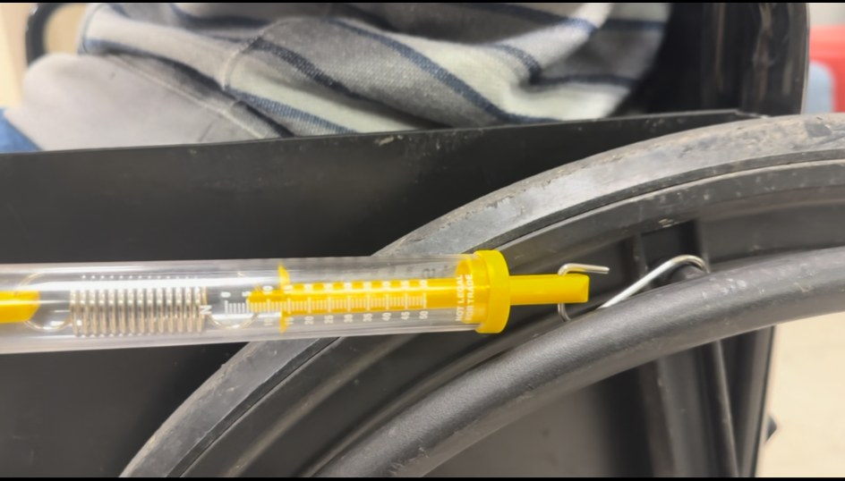
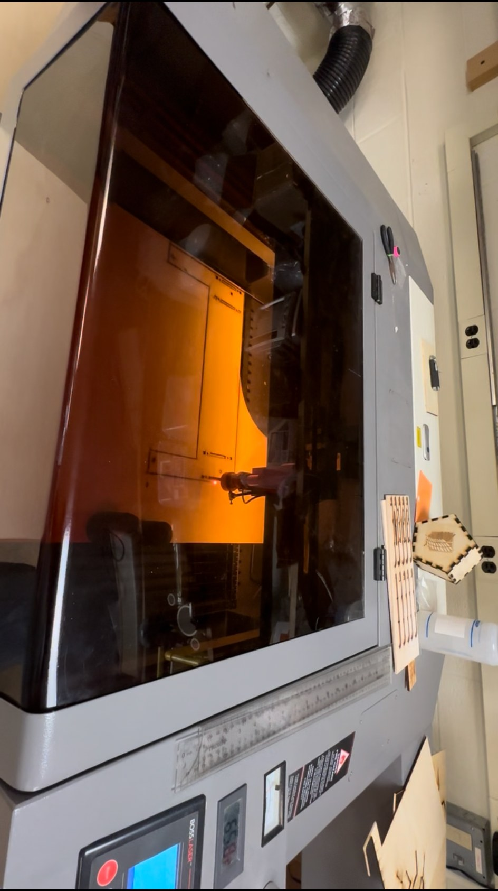

Joystick-Controlled Wheelchair Attachment
A low-cost powered-assistance prototype designed to explore how a joystick, microcontroller, and motor system could provide directional movement for a manual wheelchair. The project combined mechanical mounting, electronics, embedded programming, and hands-on testing.




The problem
Manual wheelchairs require physical effort to move. This project explored a compact, budget-conscious powered-assistance concept using commonly available electronics and fabricated parts.
My engineering approach
- Integrated joystick input with an Arduino-based control system.
- Used a motor driver to control DC motor direction.
- Fabricated a wooden mounting board using a laser cutter.
- Designed and used 3D-printed motor mounts and connectors.
- Integrated wiring and a battery into the prototype.
Control logic
The joystick supplied directional input. The Arduino interpreted that input and controlled motor direction, allowing the prototype to explore forward, backward, and turning commands. The system was programmed in the Arduino C++ environment.
Testing & iteration
Initial tests revealed that the small drive wheel could slip instead of consistently transferring torque. I adjusted its position relative to the handrim and wheelchair tire to improve contact and friction. This highlighted the importance of mechanical alignment in addition to electrical and software design.
Materials & components
- Arduino microcontroller and joystick
- Motor driver and DC motors
- Battery and electrical wiring
- Laser-cut wooden mounting board
- 3D-printed motor mounts and connectors
Budget-conscious design
The prototype was developed for approximately $50, excluding a battery that was already available. Using fabricated mounting parts and accessible electronics helped keep the material cost low.
The prototype demonstrated initial motorized movement and provided practical experience with embedded control, mechanical integration, and troubleshooting. Wheel slippage remained a limitation, and testing was conducted without a rider. The prototype was not validated for rider use or real-world safety.